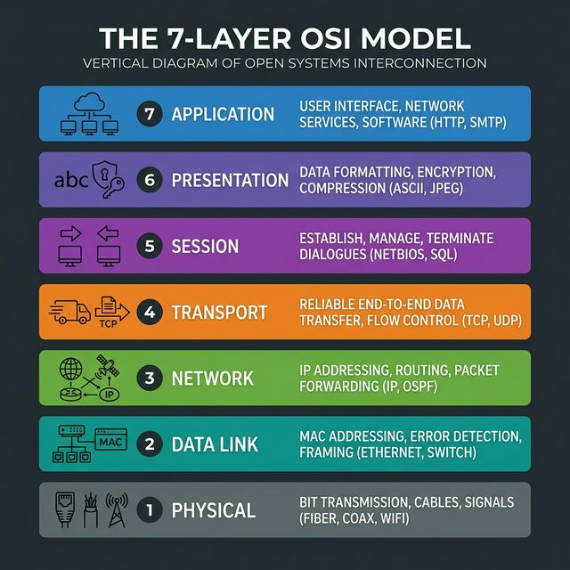

OSI and TCP/IP models
The OSI model is a seven-layer reference model used to explain how communication works across a network. The TCP/IP model is the practical model used by the internet. Security teams use both models to describe where a problem exists and which controls apply.

Use the OSI model to explain communication layer by layer. Use the TCP/IP model to explain how internet protocols work in practice.
Interview answer
"The OSI model is a seven-layer reference model for understanding network communication. The TCP/IP model is a simpler four-layer model used in real-world networking. In cybersecurity, these models help us identify where attacks happen and which controls should respond at each layer."
OSI layers
| Layer | Main purpose | Common examples | Security examples |
|---|---|---|---|
| 7. Application | User-facing network services | HTTP, DNS, SMTP, SSH | Phishing, SQL injection, malicious requests |
| 6. Presentation | Data formatting and encryption | TLS, encoding formats | SSL stripping, weak encryption handling |
| 5. Session | Session creation and management | RPC, session handling | Session hijacking |
| 4. Transport | End-to-end delivery | TCP, UDP | SYN floods, port scanning |
| 3. Network | Logical addressing and routing | IP, ICMP | IP spoofing, routing abuse |
| 2. Data link | Local delivery using MAC addresses | Ethernet, Wi-Fi | ARP poisoning, MAC spoofing |
| 1. Physical | Transmission of bits over media | Cable, fiber, radio | Jamming, cable tapping |
Common Attacks by OSI Layer
| Layer | Attack Type | Description |
|---|---|---|
| 7. Application | Cross-Site Scripting (XSS), SQLi, HTTP Flood | Exploiting vulnerabilities in the software logic or sending overwhelming HTTP requests. |
| 6. Presentation | SSL Stripping, Ransomware (Encryption) | Forcing the connection to drop from HTTPS to HTTP, or malicious encryption of data. |
| 5. Session | Session Hijacking, Man-in-the-Middle (MitM) | Stealing active session cookies to impersonate a legitimate authenticated user. |
| 4. Transport | SYN Flood, UDP Flood, Port Scanning | Exhausting server connection state tables or mapping exposed services. |
| 3. Network | Ping of Death, IP Spoofing, Route Poisoning | overwhelming routers/firewalls with fragmented ICMP packets or spoofing source IPs. |
| 2. Data Link | ARP Spoofing, MAC Flooding, VLAN Hopping | Poisoning the ARP cache to intercept LAN traffic, or overwhelming switch MAC tables. |
| 1. Physical | Wiretapping, RF Jamming, USB Drops | Physically cutting cables, jamming Wi-Fi signals, or plugging in malicious USB rubber duckies. |
TCP/IP mapping
| OSI model | TCP/IP model |
|---|---|
| Application, presentation, session | Application |
| Transport | Transport |
| Network | Internet |
| Data link and physical | Network access |
The OSI model is more detailed for teaching and troubleshooting. TCP/IP is the more practical model for explaining how network traffic actually moves.
TCP versus UDP
| Feature | TCP | UDP |
|---|---|---|
| Connection | Connection-oriented | Connectionless |
| Reliability | Reliable delivery and retransmission | Best-effort delivery |
| Ordering | Preserves order | Order is not guaranteed |
| Typical uses | Web, email, remote administration, file transfer | Streaming, VoIP, DNS, gaming |
TCP three-way handshake
TCP connections normally begin with three steps:
- SYN: the client requests a connection.
- SYN-ACK: the server acknowledges and responds.
- ACK: the client confirms and the session begins.
This matters in security because attacks such as SYN floods abuse this connection setup process.
Interview Questions & Answers
Q1. At what layer does ping operate?
"Ping uses ICMP — Internet Control Message Protocol — which operates at Layer 3, the Network layer. ICMP doesn't use TCP or UDP port numbers; it communicates directly over IP. This is why firewalls can block ICMP separately from TCP/UDP traffic. Traceroute uses ICMP Time-Exceeded messages on Layer 3 as well. In terms of OSI mapping, ping lives at the Network layer because it's concerned with IP reachability, not application-level services."
Q2. What is the difference between a hub, switch, and router?
"A hub operates at Layer 1 — it simply broadcasts every received frame to all ports regardless of destination. This wastes bandwidth and is a security risk because any device can capture all traffic in passive mode. A switch operates at Layer 2 using MAC addresses — it learns which MAC address is on which port and forwards frames only to the correct port. A router operates at Layer 3 using IP addresses — it routes packets between different networks using a routing table to find the best path. In a modern network you almost never see hubs; switched access layers connect to routed core layers."
Q3. Why is the OSI model important in cybersecurity?
"The OSI model gives security professionals a common vocabulary to describe where a vulnerability, attack, or control operates. When I say 'the attack occurred at Layer 2 via ARP poisoning' or 'the WAF protects Layer 7 HTTP traffic', everyone on the team immediately knows what part of the stack is involved and what kind of control is needed. It also helps with troubleshooting — systematically working through layers to isolate where a communication failure or anomaly originates. Most attack classification frameworks and security tools reference OSI layers when describing attack vectors and detection points."
Q4. How does a SYN flood exploit the TCP three-way handshake?
"In a normal TCP handshake, the client sends SYN, the server allocates resources and replies SYN-ACK, and waits for the client's ACK. In a SYN flood, the attacker sends thousands of SYN packets — often with spoofed source IPs — but never completes the handshake with an ACK. The server's SYN queue fills up with half-open connections waiting for ACKs that never arrive. Eventually the queue is full and the server can no longer accept new legitimate connections. Mitigations include SYN cookies — which allow the server to not allocate resources until the full handshake completes — and rate limiting SYN packets at the firewall."
Q5. What is the difference between TCP and UDP at the transport layer?
"TCP is connection-oriented — it establishes a connection with a three-way handshake and provides reliable, ordered, error-checked delivery. It retransmits lost packets and regulates flow with windowing. This reliability comes at the cost of overhead and latency. UDP is connectionless — it sends datagrams with no handshake, no acknowledgment, no ordering, and no retransmission. It's faster and suitable for applications where a dropped packet is better than a delayed one: DNS, VoIP, video streaming, and online gaming. In attack terms: SYN floods abuse TCP session setup; UDP amplification DDoS and DNS amplification exploit UDP's stateless nature."
Q6. At what OSI layer does a WAF operate?
"A WAF — Web Application Firewall — operates at Layer 7, the Application layer. Unlike a traditional firewall that inspects IP addresses and ports at Layer ¾, a WAF reads and analyzes the actual content of HTTP and HTTPS requests — the URL, headers, cookies, and body parameters — looking for attack patterns like SQL injection, XSS, and CSRF. This is why a WAF can block
' OR 1=1 --in a URL parameter while allowing normalid=42queries. TLS inspection is required for the WAF to see HTTPS content, since it's encrypted."
Q7. What OSI layer does ARP operate at?
"ARP operates at Layer 2 — the Data Link layer. While ARP resolves Layer 3 IP addresses to Layer 2 MAC addresses, the ARP protocol itself communicates using Ethernet frames at Layer 2 without any IP routing. ARP requests are broadcast —
ff:ff:ff:ff:ff:ff— within the local network segment. ARP does not cross routers. ARP poisoning exploits the stateless, unauthenticated nature of ARP by allowing any device to broadcast fake ARP reply messages claiming ownership of any IP address on the local segment."
Q8. What is TLS and at which OSI layer does it operate?
"TLS — Transport Layer Security — is a cryptographic protocol that provides encrypted, authenticated communication between two parties. It primarily operates between the Transport and Application layers — sometimes called Layer 6 (Presentation) in OSI mapping, though in TCP/IP model it's part of the Application layer. TLS provides: confidentiality (encryption), integrity (MAC), and authentication (certificates). The TLS handshake negotiates the cipher suite, exchanges keys, and authenticates the server's certificate before any application data is exchanged. HTTP over TLS is HTTPS, SMTP over TLS is SMTPS, and so on."
Q9. What happens at each step of an HTTP request through the OSI model?
"When you browse to a website: At Layer 7, your browser generates an HTTP GET request. At Layer 6, if HTTPS, TLS encrypts the data. At Layer 5, the session is managed. At Layer 4, TCP segments the data and manages transmission with the three-way handshake to the server's port 443. At Layer 3, the IP layer adds source and destination IP addresses and routes the packet across the internet. At Layer 2, Ethernet frames it with MAC addresses for the next hop. At Layer 1, the bits travel as electrical signals, light pulses, or radio waves. On the receiving end, each layer strips its header and passes the payload up to the next layer."
Q10. What is encapsulation in networking?
"Encapsulation is the process of each OSI layer adding its own header (and sometimes trailer) to the data as it passes down the stack before transmission. The Application layer creates data, the Transport layer adds a TCP/UDP header (creating a segment), the Network layer adds an IP header (creating a packet), the Data Link layer adds an Ethernet header and trailer (creating a frame), and the Physical layer transmits as bits. On the receiving end, de-encapsulation happens in reverse — each layer strips its header and passes the payload up. Understanding encapsulation helps analysts know what information is available at each layer for inspection and detection."
Q11. How does routing work and what is BGP?
"Routing is the process of forwarding packets between different networks using IP addresses. Routers maintain routing tables containing known network prefixes and the next-hop address to reach them. Interior routing protocols like OSPF and EIGRP manage routes within an organization's network. BGP — Border Gateway Protocol — is the inter-domain routing protocol of the internet, used between Autonomous Systems (AS) — large networks like ISPs, cloud providers, and enterprises with their own IP space. BGP hijacking occurs when an attacker or misconfigured router announces a more-specific route for an IP block they don't own, causing internet traffic to be redirected through their infrastructure — a devastating attack used in real incidents like the 2018 Amazon Route 53 hijack."
Q12. What is the session layer responsible for in the OSI model?
"The Session layer (Layer 5) is responsible for establishing, maintaining, synchronizing, and terminating sessions between applications. A session is a logical connection between two applications that lasts for the duration of their exchange. The Session layer handles: session establishment and teardown, session checkpointing (so data transmission can resume after interruption), and multiplexing multiple sessions between the same two hosts. In practice, the Session layer functions are often handled by the Application layer protocols directly — for example, HTTP sessions via cookies, or TLS sessions. Session hijacking attacks target this layer by stealing session tokens to impersonate authenticated users."
OSI Layer Memory Tricks
Layer numbers 1–7 (bottom to top): Physical, Data Link, Network, Transport, Session, Presentation, Application
Mnemonic (bottom to top): "Please Do Not Throw Sausage Pizza Away"
Attack mapping: - Layer 1: Jamming, wiretapping - Layer 2: ARP poisoning, MAC flooding, VLAN hopping - Layer 3: IP spoofing, ICMP floods, routing attacks - Layer 4: SYN flood, UDP flood, port scanning - Layer 5: Session hijacking - Layer 6: SSL stripping, weak cipher negotiation - Layer 7: SQLi, XSS, HTTP flood, phishing